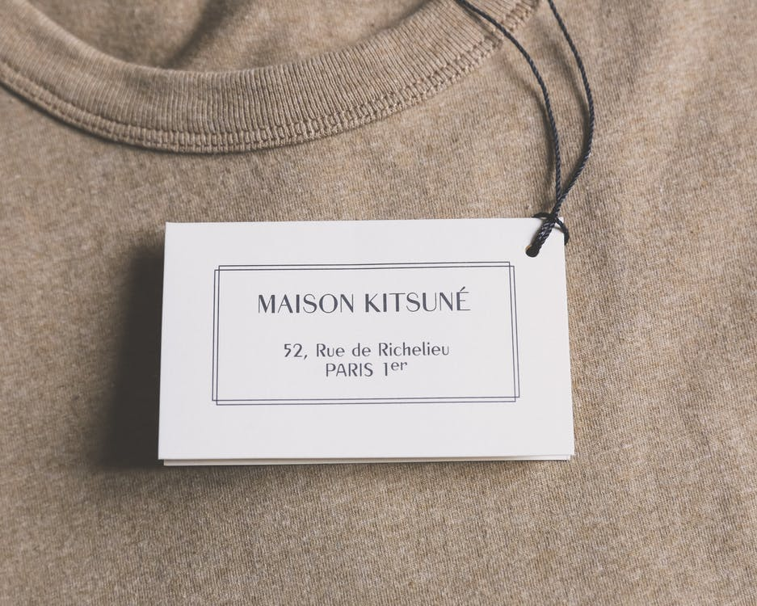

Holidays
My Favorite Things

洋服を見るのが好きで、隙間時間にはネットショッピングを見ることも多いです。街中ではお洒落な人を見かけると、こういう着こなし方もあるのか〜とめちゃくちゃ観察してしまいます（笑）
夏は山より海が好きで休日もアウトドア派です！海沿いを歩いたり、海の見えるカフェやレストランで過ごす時間は大好きです🌊

将来の夢の一つはマイホームを建てることです！自分的最高の空間を作りたくて、インテリア雑誌を見ながら将来の妄想をしてます👀
コーヒーは一番好きな飲み物で、苦いのも甘いのも大好きです☕️いつか時間ができたらコーヒーのことも深く勉強してみたいと思ってます。